Tuijo. Per due.
Una chat privata che vive solo sui vostri due telefoni.

iPhone e Android · italiano, inglese, spagnolo, catalano
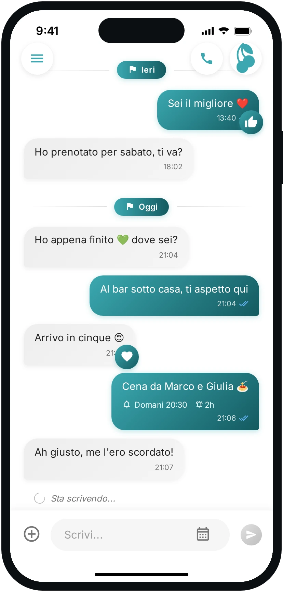
Una chat privata che vive solo sui vostri due telefoni.
iPhone e Android · italiano, inglese, spagnolo, catalano

Ognuno mostra il suo codice e inquadra quello dell'altro. Niente email, niente numero di telefono, niente password: da lì in poi esistete solo voi due.
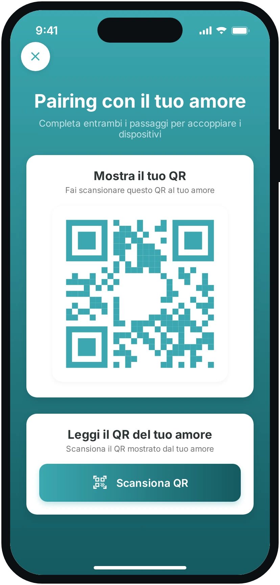
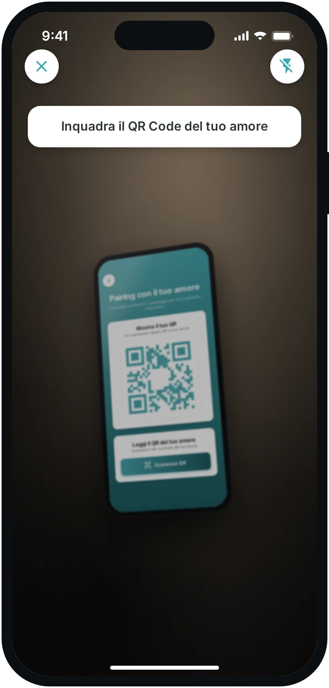
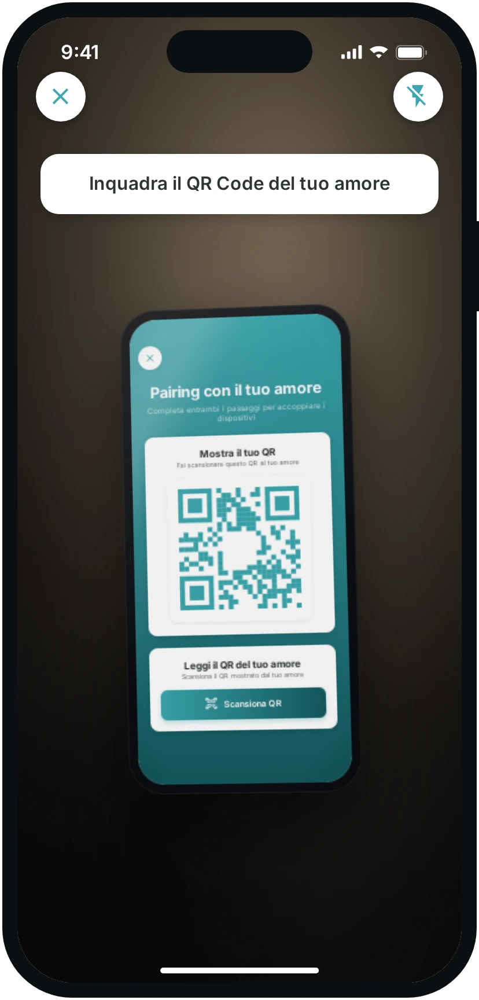
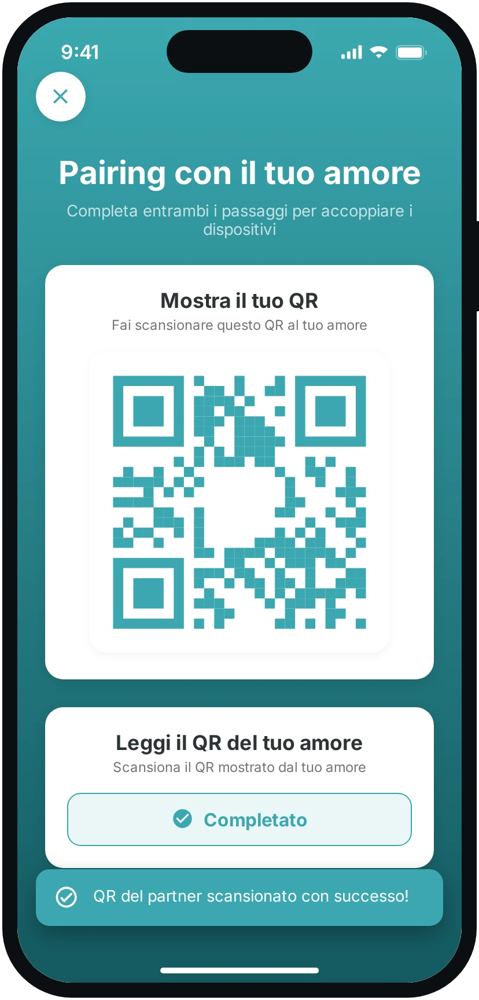
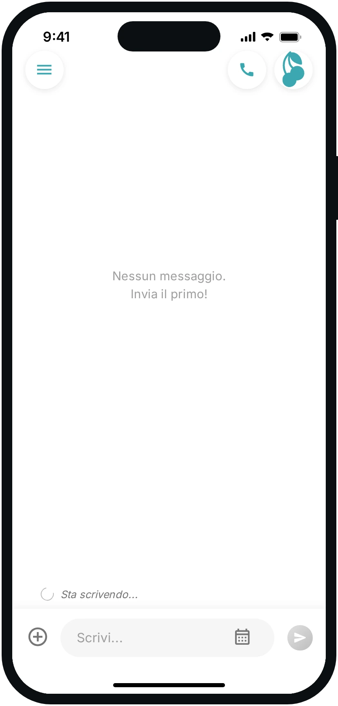
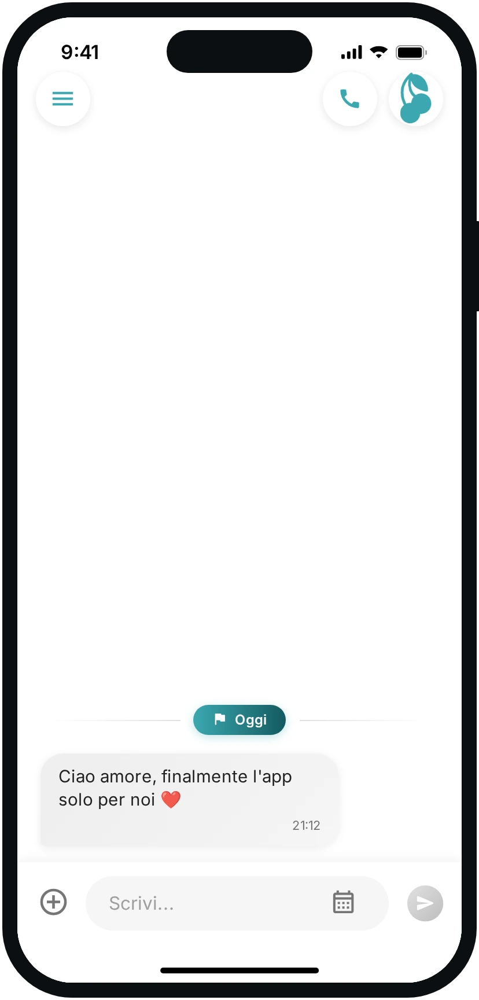
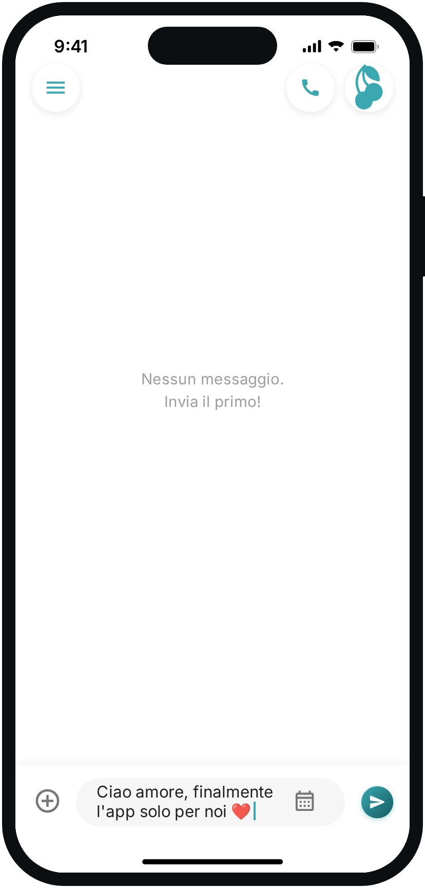
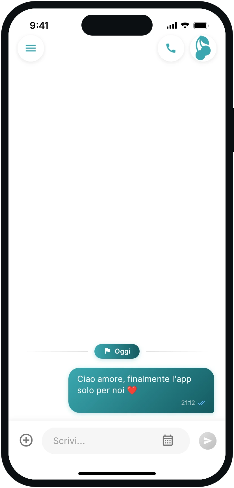
La cena di venerdì, il treno da prenotare, i fiori per sua madre: un promemoria con data e ora compare nella chat di tutti e due, e un'ora prima avvisa entrambi.
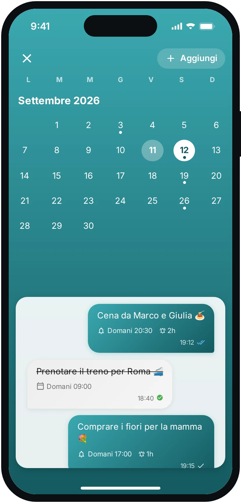
Le foto, i video, i link e i documenti che vi siete mandati si raccolgono mese per mese. Niente più scroll all'indietro per ritrovare quella foto di agosto.
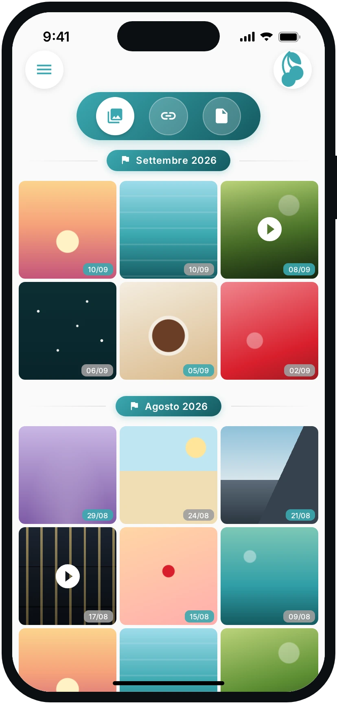
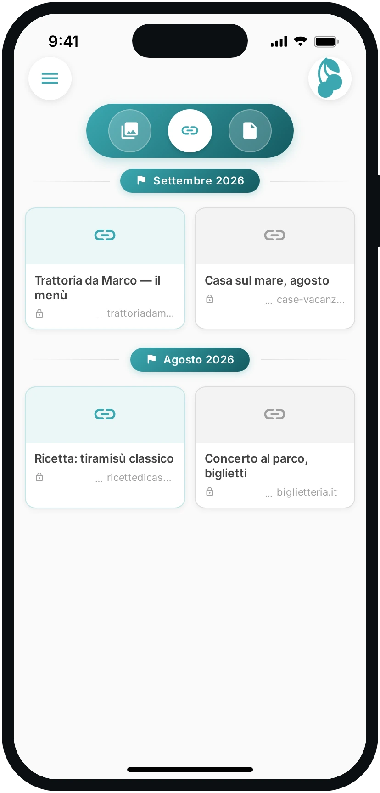
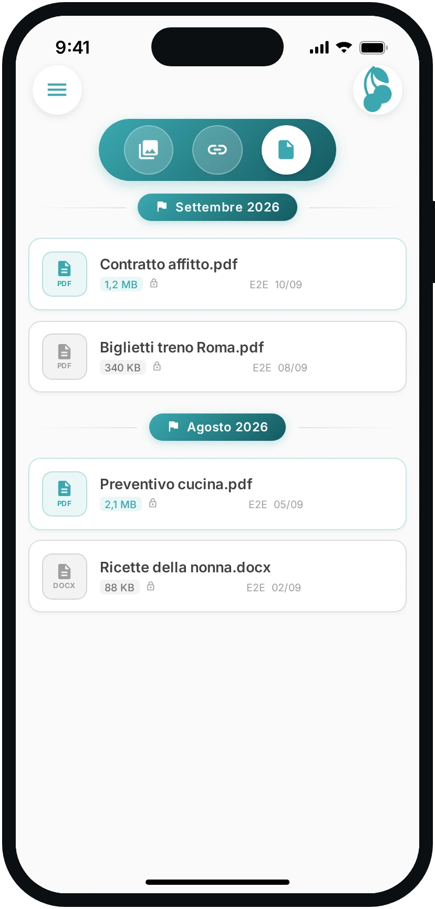
La cornetta è dentro la chat: un tocco e parte la chiamata, peer-to-peer, diretta da un telefono all'altro.
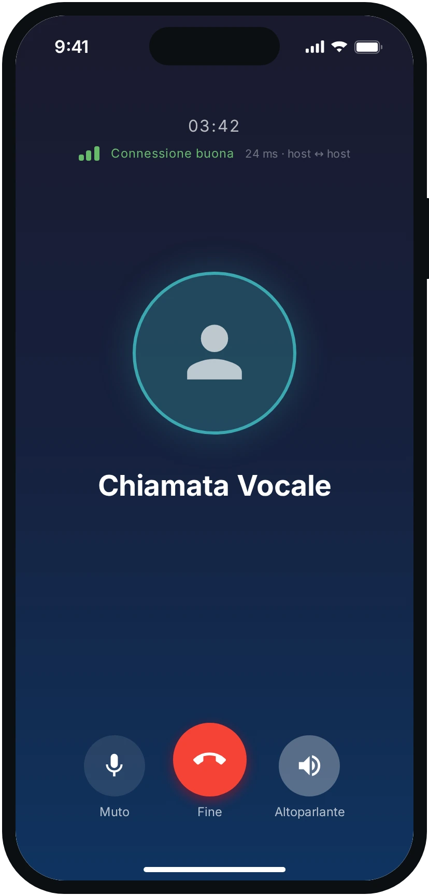
Non è una promessa commerciale: è il modo in cui l'app è costruita.
La chiave privata nasce sul dispositivo al primo avvio e non lo lascia mai. Sui nostri server non arriva, quindi non può essere consegnata a nessuno.
Ogni messaggio usa una chiave AES-256 usa e getta, chiusa a sua volta con la chiave pubblica di entrambi i dispositivi.
Nel cloud transita testo illeggibile. Anche le coordinate della posizione viaggiano cifrate e la sessione scade da sola.
RSA-2048 + AES-256 · nessun account e nessun numero di telefono · zero-knowledge
Su iPhone tramite App Store e su Android tramite Google Play. L'interfaccia è disponibile in italiano, inglese, spagnolo e catalano.
No. Non c'è registrazione: i due telefoni si riconoscono scambiandosi le chiavi pubbliche con un codice QR, e da quel momento la conversazione esiste solo tra loro.
Le coordinate vengono cifrate con una chiave dedicata alla sessione, che dura una o otto ore e poi scade. Sul server non resta una posizione leggibile.
No, ed è una scelta di progetto: un dispositivo si abbina a un altro dispositivo. Non ci sono gruppi né rubrica.
Sì. Sul telefono nuovo apri Impostazioni → Recupera i messaggi e scegli da dove: dal telefono del partner o dal tuo vecchio telefono. Il telefono nuovo mostra un QR che vale dieci minuti, l'altro lo inquadra da Impostazioni → Aiuta il partner a recuperare (oppure Trasferisci), e il certificato arriva cifrato solo per quel dispositivo: la chat si ricompone da sola.
Da Impostazioni → Elimina Messaggi, a tre livelli: solo da questo telefono, solo dal telefono del partner, oppure da tutti e due e anche dal server. I primi due lasciano la chat sul server, quindi rifacendo il pairing torna; l'ultimo è irreversibile.